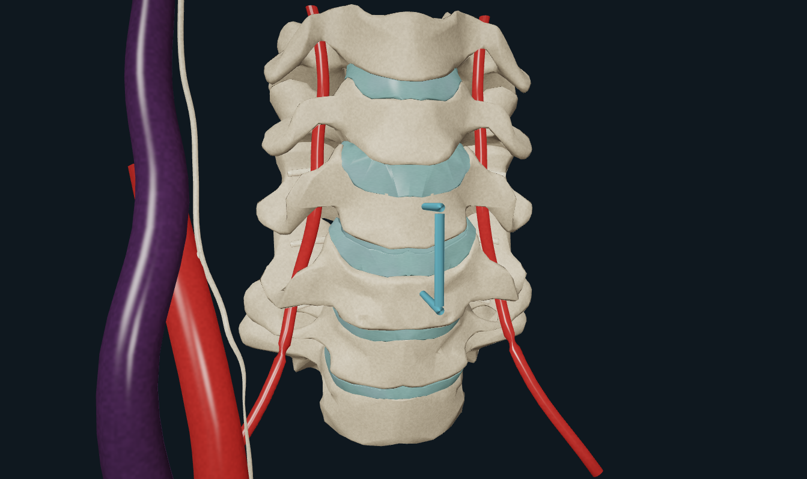
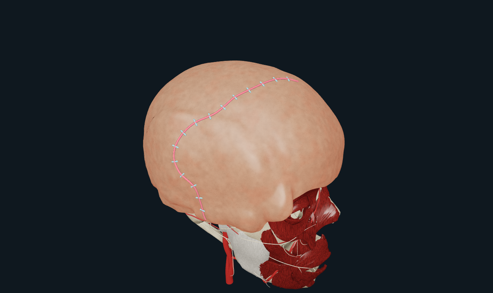
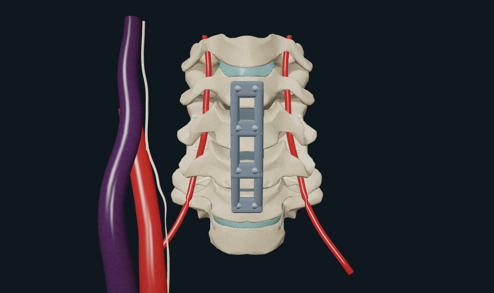
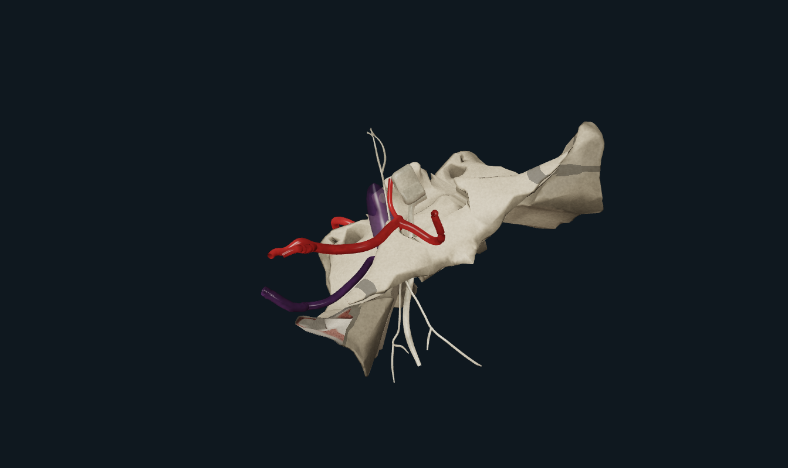
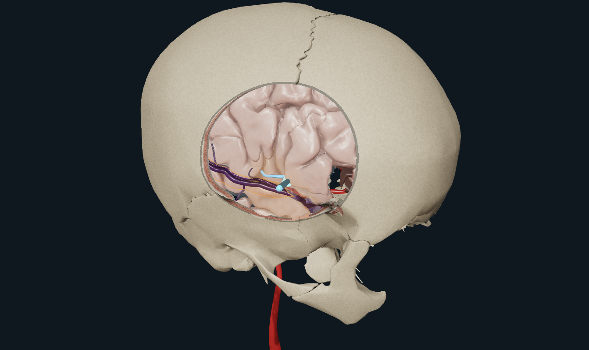

Spine · Available
Anterior Cervical Discectomy and Fusion
Explore the approach, decompression and reconstruction.
Interactive anatomy and operative guides, organized by procedure.
Explore the library ↗



Explore the approach, decompression and reconstruction.

Study the frontotemporal corridor and its extensions.